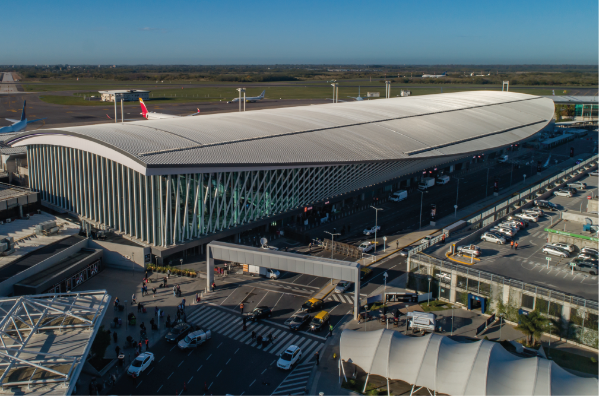

Centro de Transporte Inteligente
Ezeiza Connect Hub centraliza toda la información de transporte terrestre desde el Aeropuerto Internacional Ezeiza, permitiendo a pasajeros y trabajadores encontrar la mejor forma de viajar según tiempo, comodidad y presupuesto.
Estado
Terminal operativa
Terminal operativa
Atención
24 horas
24 horas
Servicios activos
5 líneas de transporte
5 líneas de transporte
Servicios Ejecutivos
Transporte premium con conexión rápida hacia CABA y Aeroparque.
Colectivos Urbanos
Líneas urbanas y regionales que conectan Ezeiza con distintos puntos del AMBA.
Micros de Larga Distancia
Servicios hacia distintas provincias del país desde las terminales del aeropuerto.
¿Qué ofrece Ezeiza Connect Hub?
El sitio permite consultar recorridos, horarios, accesibilidad, mapas y servicios disponibles para facilitar la movilidad terrestre desde el aeropuerto hacia distintos destinos.